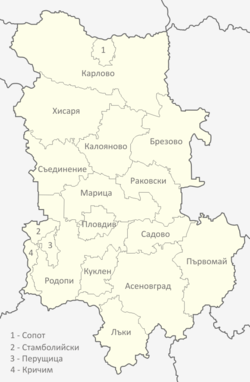

Пловдивска област
Традиции и обичаи в Пловдивска област
- Пловдив
- Пловдив е вторият по големина град в България с население 347 851 души по настоящ адрес. Намира се в западната част на Горнотракийската низина, на двата бряга на река Марица. Отстои на 15 km северно от Родопите и на 50 km южно от Стара планина. Пловдив е управленски център на област Пловдив, община Пловдив, община Марица, община Родопи и е най-голямото стопанско ядро на Южния централен район. Пловдив е град на над 8000 години, чието минало може да се проследи от праисторията до наши дни. Първите неолитни поселения в границите на днешния град започват от VI хилядолетие пр.н.е. радът е най-динамично развиващият се център в Южна България. Икономиката му се крепи на добре развитата многопрофилна индустрия, на услугите, туризма и информационните технологии.
- Карлово
- Карлово е град в Южна централна България, разположен в южното подножие на Стара планина – Област Пловдив. Най-близкият град до Карлово е град Сопот – на 5 км посока запад, а до Пловдив разстоянието е 52 км в посока юг. Градът е трети по големина в областта след Пловдив и Асеновград и е административен център на Община Карлово. По данни на НСИ към 31 декември 2018 г. населението на града е 28 037 жители. Карлово е разположено на 386 м надморска височина в северната част на Карловското поле, което се образува на югозапад от Стара планина, на север от Същинска Средна гора и на североизток от Сърнена гора. Карлово се намира на 145 км източно от столицата София и на 64 км северно от областния и втори по големина град в страната – Пловдив.
- Калофер
- Калофер е град в Южна България. Намира се в Община Карлово, Област Пловдив. Калофер е известен не само с природата си, но и с красивите си църкви и манастири. Малка уличка отвежда до Девическия манастир, наследник на 4 метоха, където получава килийна просвета първата българска учителка Анастасия Димитрова. Мъжкият манастир функционира от 1640, а женският от 1700 г. И двата манастира, въпреки многобройните си опожарявания, са отворени за посетители. В Калофер добре запазени през годините са типичните български занаяти и традиции. Посещаването в ателиетата за плетене на прочулата се и зад граница калоферска дантела и тъкане на традиционните селски черги и китеници са част от атракциите в района.
- Първомай
- Първомай е град в Южна България, област Пловдив. До 1894 г. носи името Хаджи Елес, а до 1947 г. се казва Борисовград Първомай се намира в област Пловдив и е в близост до областните градове Пловдив, Стара Загора и Хасково. Градът е административен център на община Първомай. Притежава развита лека промишленост. Население на град Първомай към края на 2015 г. – 12 533 жители. По данни на НСИ населението на града към 31декември 2018 е 12 120 жители. Според Музея на образованието в гр. Първомай първото училище е било изградено през 1836 г. Първи учител е поп Никола, който, освен обучението на учениците, извършва в училището и богослужения, църковни обреди – венчавки, кръщенета, опела.
